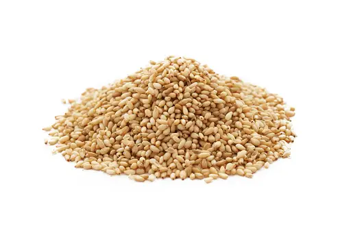

1. Seasons for Growing Sesamum

Sesamum, commonly known as sesame, is a drought-resistant oilseed crop well-suited for warm climates. The best seasons for growing sesamum are:
- Kharif Season: Sesamum is typically sown during the kharif season (June to July) and harvested in September to October, depending on the region.
- Rabi Season: In some areas, sesame can also be planted in the rabi season (October to November) and harvested in February to March.